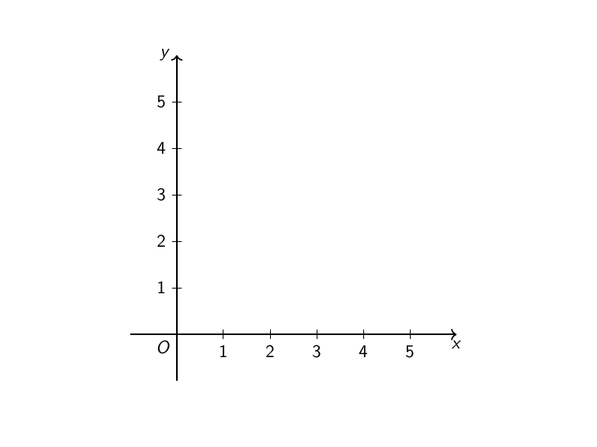
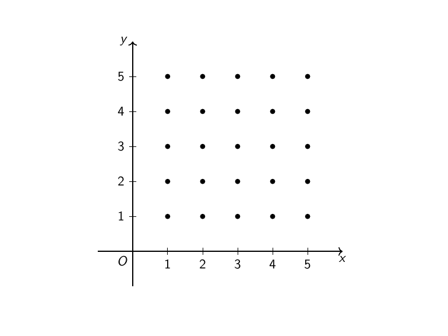
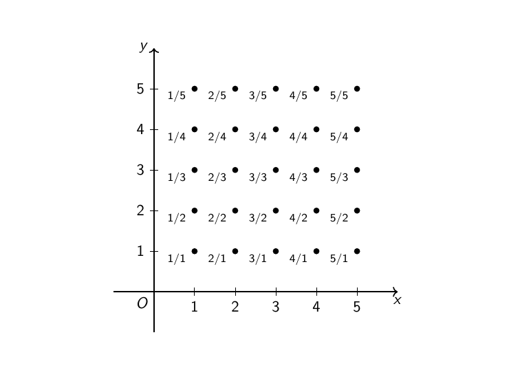
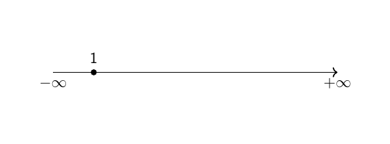
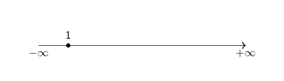

Κλάσματα! Κλάσματα παντού!#

Ο πίνακας (Μικρή) κάλυψη του επιπέδου του Maurits Cornelis Escher.#
Εισαγωγή#
«Κλάσματα! Κλάσματα παντού!» θα μπορούσε να είχε τραγουδήσει ο συγχωρεμένος και αγαπητός Τζίμης Πανούσης, αν είχε ασχοληθεί με τα μαθηματικά. Γιατί, όπως θα δούμε και παρακάτω, είμαστε περιτριγυρισμένοι από κλάσματα, ζουν ανάμεσά μας, που θα έλεγαν και κάποιοι πιο cult τύποι. Αλλά, όπως επίσης θα δούμε, δεν είναι, δα, και τόσα πολλά όσα φαίνονται, για την ακρίβεια, είναι «πολύ λίγα» σε σχέση με όλους τους πραγματικούς αριθμούς. Αλλά, ας πιάσουμε τα πράγματα από την αρχή.
Οι φυσικοί αριθμοί, οι ακέραιοι και τα αριθμήσιμα σύνολα#
Οι φυσικοί αριθμοί#
Ποιοι είναι οι φυσικοί αριθμοί; Όπως μάς έλεγε αστεϊζόμενος ένας καθηγητής μας στη σχολή «τους φυσικούς μας τους έδωσε ο Θεός». Προς το παρόν, θα αρκεστούμε σε αυτήν την μοιρολατρική προσέγγιση για την ύπαρξη και τη δομή των φυσικών (αριθμών), για τους οποίους επιφυλασσόμαστε να μιλήσουμε σε άλλη ανάρτηση. Το μόνο που θα ξεκαθαρίσουμε εδώ είναι το αν το μηδέν (0) είναι φυσικός αριθμός ή όχι.
Λοιπόν, επιστημονικά και τελείως δημοκρατικά, δεν είναι. Εξηγούμαι. Οι ιδιότητες των φυσικών αριθμών που μας απασχολούν εδώ δεν εξαρτώνται από το σημείο «εκκίνησης» των φυσικών αριθμών (αν θα είναι το 0 ή το 1 ή το 5), αλλά από το ότι υπάρχει ο πρώτος φυσικός αριθμός καθώς και από το ότι για κάθε φυσικό αριθμό υπάρχει ένας επόμενος φυσικός αριθμός (π.χ. το 6 είναι ο επόμενος του 5, το 159 ο επόμενος του 158 κ.ο.κ.). Επομένως, για δική μας ευκολία, υποθέτουμε ότι το σύνολο των φυσικών αριθμών, το οποίο θα συμβολίζουμε με \(\mathbb{N}\) , είναι το σύνολο:
Οι ακέραιοι αριθμοί#
Ένα βήμα μετά τους φυσικούς αριθμούς βρίσκονται οι ακέραιοι αριθμοί, το σύνολο των οποίων θα συμβολίζουμε με \(\mathbb{Z}\) . Οι ακέραιοι, όπως ξέρουμε, περιέχουν όλους τους φυσικούς, το 0, αλλά και όλους τους αντίθετους των φυσικών αριθμών, δηλαδή, το σύνολο των ακεραίων είναι το:
Το βολικό με τους ακεραίους είναι ότι μπορούμε να μιλήσουμε εύκολα για αριθμητική με τους συνήθεις σχολικούς όρους. Μπορούμε δηλαδή να μιλάμε και για αφαίρεση με την έννοια της πρόσθεσης τους αντιθέτου (στους φυσικούς δεν υπάρχει αντίθετος για να το κάνουμε αυτό) αλλά και για τις υπόλοιπες πράξεις (πρόσθεση, πολλαπλασιασμό και διαίρεση με πηλίκο και υπόλοιπο).
Αριθμήσιμα σύνολα#
Αν πάρουμε το σύνολο των φυσικών, θα δούμε ότι είναι πολύ εύκολο να το γράψουμε σε «λίστα», με άλλα λόγια, μπορούμε να βάλουμε ένα στοιχείο ως πρώτο, μετά ένα άλλο ως δεύτερο, μετά ένα άλλο ως τρίτο κ.ο.κ.. Για παράδειγμα, πρώτο στοιχείο μπορεί να είναι το 1, δεύτερο το 2, τρίτο το 3 κ.λ.π.. Αυτή η διαδικασία δημιουργίας μίας «λίστας» λέγεται αρίθμηση ενός συνόλου και μας είναι οικεία από τα παιδικά μας χρόνια (μία καραμέλα, δύο καραμέλες, τρεις καραμέλες,…, πονόκοιλος).
Γενικά, αν \(A\) είναι ένα σύνολο, θα λέμε ότι το \(A\) είναι αριθμήσιμο αν μπορούμε να το γράψουμε σαν μία (πεπερασμένη ή άπειρη) λίστα, δηλαδή αν:
Έτσι, το σύνολο \(\mathbb{N}\) των φυσικών αριθμών είναι ένα άπειρο αριθμήσιμο σύνολο, ενώ το σύνολο \(A=\{1,3,5,6\}\) είναι ένα πεπερασμένο αριθμήσιμο σύνολο. Ένα άλλο σύνολο που είναι αριθμήσιμο είναι αυτό των ακεραίων, \(\mathbb{Z}\) , μιας και μπορούμε να το γράψουμε ως εξής:
δηλαδή, ξεκινάμε από το 0 και αρχίζουμε να γράφουμε τους φυσικούς αριθμούς και μετά από τον καθέναν από αυτούς «παρεμβάλλουμε» τον αντίθετό του.
Το παραπάνω τέχνασμα μας δίνει και την εξής ιδέα: αν \(A,B\) είναι δύο αριθμήσιμα σύνολα, τότε θα μπορούμε να γράψουμε το καθένα σαν λίστα, δηλαδή:
Για την ένωσή τους, \(A\cup B\) , μπορούμε να δούμε ότι αυτή γράφεται σαν λίστα ως εξής:
Δηλαδή, γράφουμε εναλλάξ ένα στοιχείο του \(A\) και μετά ένα στοιχείο του \(B\) , όπως κάναμε και με το σύνολο των ακεραίων. Επομένως, η ένωση δύο αριθμήσιμων συνόλων είναι και αυτή ένα αριθμήσιμο σύνολο. Παρατηρήστε ότι, αν κάποια από τα στοιχεία του \(B\) είναι και στοιχεία του \(A\) , τότε απλά δεν τα συμπεριλαμβάνουμε δύο φορές στην παραπάνω λίστα, πράγμα που δεν επηρεάζει το «ποιο είναι» το σύνολο \(A\cup B\) .
Επίσης, να παρατηρήσουμε ότι αν το \(A\) είναι αριθμήσιμο, τότε και κάθε υποσύνολό του, \(B\subseteq A\) είναι επίσης αριθμήσιμο, αφού, αν μπορούμε να γράψουμε τα στοιχεία του \(A\) με τη μορφή λίστας, θα μπορούμε να γράψουμε και τα στοιχεία του \(B\) σαν μια λίστα (μπορούμε από τη λίστα των στοιχείων του \(A\) να διαγράψουμε όσα δεν ανήκουν στο \(B\) ).
Γενικά σε ό,τι αφορά τα άπειρα αριθμήσιμα σύνολα, μπορούμε να τα σκεφτόμαστε σαν αυτά τα σύνολα που έχουν τόσα στοιχεία όσα και οι φυσικοί αριθμοί, υπό την έννοια ότι, μπορούμε να μιλάμε για πρώτο, δεύτερο, τρίτο κ.ο.κ. στοιχείο ενός άπειρου αριθμήσιμου συνόλου, όπως κάνουμε και με τους φυσικούς αριθμούς.
Μία ενδιαφέρουσα απορία που θα μπορούσε να έχει κανείς είναι αν υπάρχουν σύνολα που δεν είναι αριθμήσιμα, δηλαδή σύνολα των οποίων τα στοιχεία είναι «τόσα πολλά» που δεν μπορούμε να τα γράψουμε σε μία λίστα. Απάντηση σε αυτό το ερώτημα θα δώσουμε παρακάτω, αφού πρώτα δούμε ένα ακόμα παράδειγμα αριθμήσιμου συνόλου, που όμως «δεν του φαίνεται» ότι είναι αριθμήσιμο.
Οι ρητοί αριθμοί#
Ορισμός#
Οι ρητοί αριθμοί είναι, πρακτικά, όλοι οι αριθμοί που μπορούν να γραφούν σαν κλάσματα. Επομένως, μπορεί κανείς να πει, συμβολίζοντας το σύνολο των ρητών με \(\mathbb{Q}\) :
Όμως, έτσι έχουμε πάρει πολλές φορές τα ίδια κλάσματα αφού, π.χ. έχουμε:
πράγμα που δεν είναι λάθος, αλλά γιατί να μην είμαστε λίγο πιο κομψοί στις εκφράσεις μας; Θα μπορούσαμε να μην επιτρέψουμε και στον αριθμητή και στον παρονομαστή να είναι ακέραιοι, μιας και το πρόσημο του κλάσματος μπορεί πάντα να βρίσκεται στον αριθμητή. Επομένως, μπορούμε να υποθέτουμε ότι ο αριθμητής είναι ακέραιος και ο παρονομαστής φυσικός, δηλαδή:
Ακόμα κι έτσι, αν και δεν μπορούμε πλέον να μιλάμε για κλάσματα σαν το \(\dfrac{-3}{-4}\) , έχουμε άπειρα κλάσματα που είναι όλα ίσα μεταξύ τους:
πράγμα που επίσης θα θέλαμε αν αποφύγουμε. Εδώ έρχεται η έννοια του ανάγωγου κλάσματος, του κλάσματος, δηλαδή, που δεν μπορούμε να απλοποιήσουμε περαιτέρω, όπως, για παράδειγμα, το \(\dfrac{25}{12}\) . Η απλοποίηση, όπως θυμόμαστε, είναι ουσιαστικά η διαίρεση αριθμητή και παρονομαστή με τον ίδιο αριθμό (μεγαλύτερο της μονάδας). Έτσι, ένα κλάσμα \(\dfrac{m}{n}\) είναι ανάγωγο αν δεν μπορούμε να βρούμε ένα αριθμό που να διαιρεί και το \(m\) και το \(n\) . Με άλλα λόγια, ένα κλάσμα είναι ανάγωγο αν ο μέγιστος κοινός διαιρέτης των \(m\) και \(n\) είναι 1. Με αυτό κατά νου, ορίζουμε το σύνολο \(\mathbb{Q}\) των ρητών να είναι το σύνολο:
Έτσι, έχουμε συμπεριλάβει μόνο ανάγωγα κλάσματα μέσα στο \(\mathbb{Q}\) , χωρίς να παίρνουμε και τα «διπλότυπα».
Η αριθμησιμότητα των ρητών#
Μπορούμε να γράψουμε τους ρητούς σαν μία λίστα, όπως και τους φυσικούς; Με άλλα λόγια, μπορούμε να μιλήσουμε για τον πρώτο, τον δεύτερο, τον τρίτο κ.ο.κ. ρητό αριθμό;
Αρχικά, ας παρατηρήσουμε ότι μπορούμε να ασχοληθούμε μόνο με τους θετικούς ρητούς, αφού, κάθε αρνητικός ρητός είναι το αντίθετο ενός θετικού ρητού, άρα, αν μπορούμε να γράψουμε τους θετικούς ρητούς σαν μια λίστα, θα μπορούμε να γράψουμε και τους αρνητικούς. Βάζουμε σε μία από τις δύο λίστες και το 0 και είμαστε έτοιμοι: οι ρητοί θα είναι αριθμήσιμοι επειδή θα είναι η ένωση δύο αριθμήσιμων συνόλων. Έτσι, από εδώ και μπρος, θα μας απασχολήσουν μόνο οι θετικοί ρητοί.
Ας κάνουμε, λοιπόν, μία προσπάθεια. Θα πάρουμε ως πρώτο ρητό αριθμό το 0. Δεύτερος ρητός αριθμός θα μπορούσε να είναι, για παράδειγμα, το 1. Μετά, θα μπορούσαμε να πάρουμε σαν τρίτο ρητό αριθμό το 2 και, έτσι, να πάρουμε όλους τους φυσικούς αριθμούς. Αλλά, μετά, πού θα βάλουμε τα γνήσια κλάσματα (αυτά που δεν έχουν παρονομαστή 1); Η λίστα μας είναι άπειρη, δηλαδή δεν έχει τέλος, άρα δεν μπορούμε να πούμε ότι θα προσθέσουμε στο τέλος τα κλάσματα.
Κι εδώ έρχεται η εξής ιδέα: γιατί να μην κάνουμε το ίδιο κόλπο με τους ακεραίους; Δηλαδή, έστω το σύνολο \(A_2\) με:
Τότε, τα \(\mathbb{N},A_2\) είναι αριθμήσιμα, άρα και η ένωσή τους, \(\mathbb{N}\cup A_2\) θα είναι αριθμήσιμη. Έτσι, έχουμε δείξει ότι το σύνολο των φυσικών, μαζί με τα κλάσματα με παρονομαστή 2 είναι αριθμήσιμο. Ανάλογα, ορίζουμε το σύνολο \(A_3\) :
που περιέχει όλα τα κλάσματα με παρονομαστή 3 και είναι, προφανώς, αριθμήσιμο. Έτσι, και το σύνολο:
που περιέχει τους φυσικούς και τα κλάσματα με παρονομαστές 2 ή 3 είναι αριθμήσιμο. Ανάλογα, ορίζουμε για κάθε \(k=2,3,\ldots\) το σύνολο:
που περιέχει όλα τα κλάσματα με παρονομαστή ίσο με \(k\) . Όπως και πριν, όλα τα \(A_k\) είναι αριθμήσιμα, άρα και το σύνολο:
είναι αριθμήσιμο, για οποιοδήποτε \(n=2,3,\ldots\) . Ας παρατηρήσουμε ότι, οσοδήποτε μεγάλο κι αν είναι το \(n\) που θα επιλέξουμε, το σύνολο \(B_n\) περιέχει «πολλά» κλάσματα, αλλά όχι όλα! Για παράδειγμα, αν \(n=100\) , τότε το σύνολο \(B_{100}\) δεν περιέχει το κλάσμα \(\dfrac{1}{101}\) . Γενικά, για κάθε \(n\) , το σύνολο \(B_n\) που ορίσαμε παραπάνω δεν περιέχει το κλάσμα \(\dfrac{1}{n+1}\) (μπορείτε να εξηγήσετε γιατί;). Έτσι, κανένα από τα \(B_n\) δεν είναι ίσο με το σύνολο των θετικών ρητών, ας το συμβολίζουμε με \(\mathbb{Q}^+\) , επομένως, ακόμα δεν έχουμε καταφέρει τίποτα.
Σε αυτό το σημείο, θα θέλαμε πάρα πολύ, δεδομένου ότι όλα τα \(A_k\) είναι αριθμήσιμα και το σύνολο των φυσικών, \(\mathbb{N}\) , είναι αριθμήσιμο, να πούμε ότι και το σύνολο:
είναι αριθμήσιμο, μιας και το \(B_{\infty}\) περιέχει ακριβώς όλους τους θετικούς ρητούς αριθμούς. Ωστόσο, εδώ δεν έχουμε να κάνουμε με την ένωση δύο ή τριών ή, γενικά, πεπερασμένων στο πλήθος αριθμήσιμων συνόλων (οπότε και θα ήμαστε καλυμμένοι), αλλά με άπειρα στο πλήθος σύνολα (τα \(A_k\) , για \(k=2,3,\ldots\) ), οπότε δεν μας εγγυάται κανείς ότι μπορούμε με κάποιον τρόπο να «ράψουμε» άπειρες στο πλήθος λίστες και να πάρουμε μία νέα λίστα. Επομένως, η προσπάθειά μας πέφτει στο κενό.
(Θρήνος)
Κι εδώ έρχεται μία ιστορική φυσιογνωμία των μαθηματικών, ο Georg Cantor, να μας δώσει τα φώτα του. Η συνεισφορά του Cantor στο πρόβλημά μας είναι ότι παρέθεσε έναν κομψό και ιδιοφυή τρόπο για να παρουσιάσει κανείς τους φυσικούς αριθμούς, έτσι ώστε να φανεί η αριθμησιμότητά τους. Αρχικά, ας πάρουμε δύο άξονες κάθετους μεταξύ τους και ας βάλουμε πάνω σε κάθε άξονα όλους τους φυσικούς αριθμούς όπως φαίνεται στο παρακάτω σχήμα:

Οι δύο άξονες.#
Στη συνέχεια, σχεδιάζουμε όλα τα σημεία που έχουν ως συντεταγμένες φυσικούς αριθμούς (π.χ. τα σημεία \(A(1,4)\) και \(B(2,1)\) , αλλά όχι το \(C(4,1/12)\) ), όπως φαίνεται στο παρακάτω σχήμα:

Το «πλέγμα» του Cantor.#
Έπειτα, προτείνει να φανταστούμε κάθε αριθμό στον κατακόρυφο άξονα ως παρονομαστή και κάθε αριθμό στον οριζόντιο άξονα ως αριθμητή. Έτσι, κάθε σημείο αντιστοιχεί σε έναν ακριβώς θετικό ρητό αριθμό, όπως φαίνεται παρακάτω:

Τα κλάσματα σαν πλέγμα.#
Εδώ παρατηρούμε ότι στην πρώτη γραμμή φαίνονται οι φυσικοί αριθμοί, στη δεύτερη τα κλάσματα με παρονομαστή 2, στην τρίτη αυτά με παρονομαστή 3 κ.ο.κ., πράγμα που θυμίζει, λίγο έως πολύ, αυτό που κάναμε και προηγουμένως. Εδώ όμως έρχεται η ιδέα που μας έλειπε. Ας φανταστούμε ότι στεκόμαστε στο σημείο \(A(1,1)\) , το οποίο αντιστοιχεί στον αριθμό 1. Ξεκινάμε και κινούμαστε όπως φαίνεται στο ακόλουθο σχήμα:

Ο περίπατος του Cantor.#
Έτσι, πρώτος αριθμός της λίστας μας είναι το 1, δεύτερος το 2, τρίτος το 1/2, τέταρτος το 1/3, πέμπτος το 1, έκτος το 3 κ.ο.κ.. Παρατηρήστε ότι κάποιο αριθμοί εμφανίζονται δύο και τρεις και παραπάνω φορές, αλλά αυτό δε μας ενοχλεί, όπως έχουμε πει. Αυτό που έχει σημασία είναι ότι καταφέραμε να γράψουμε όλους τους θετικούς ρητούς σε μία λίστα, άρα το σύνολο των ρητών αριθμών, \(\mathbb{Q}\) , είναι αριθμήσιμο.
Πριν κλείσουμε την ενότητα αυτή για την αριθμησιμότητα των ρητών, να σκεφτούμε το εξής. Αν μας ρώταγε κάποιος στον δρόμο ποιοι αριθμοί φαίνονται να είναι περισσότεροι, οι φυσικοί ή οι ρητοί, τότε, τι είναι πιο πιθανό να απαντούσαμε; Μάλλον οι ρητοί, αν σκεφτούμε ότι οι φυσικοί περιέχονται όλοι στους ρητούς (για την ακρίβεια, στο παραπάνω σχήμα οι φυσικοί είναι μόνο η πρώτη γραμμή). Ωστόσο, αφού δείξαμε ότι και τα δύο σύνολα είναι αριθμήσιμα (και άπειρα), έπεται ότι έχουν και το ίδιο πλήθος στοιχείων, μιας και, όπως μιλάμε για τον πρώτο, τον δεύτερο κ.ο.κ. φυσικό (αριθμό), έτσι μπορούμε πλέον να μιλάμε και για τον πρώτο, τον δεύτερο κ.ο.κ. ρητό αριθμό.
Η πυκνότητα των ρητών#
Αν προσπαθήσουμε πάνω στην ευθεία των πραγματικών αριθμών να τοποθετήσουμε όλους τους φυσικούς αριθμούς, τότε δε θα συναντήσουμε ιδιαίτερη δυσκολία, καθώς πρέπει απλώς να αποφασίσουμε πού θα τοποθετήσουμε την μονάδα μας (1) και στη συνέχεια να προχωράμε με σταθερό βήμα «φυτεύοντας» και όλους τους υπόλοιπους αριθμούς, όπως φαίνεται παρακάτω:

Φυτεύοντας φυσικούς (αριθμούς).#
Τώρα, αν θέλουμε να βάλουμε όλους τους (θετικούς) ρητούς στον άξονα, πώς θα εργαστούμε; Ένας τρόπος είναι να ακολουθήσουμε τα βήματα του Cantor, αλλά θα μας βγει η ψυχή, οπότε μπορούμε, πολύ απλά, να τοποθετήσουμε πρώτα όλους τους φυσικούς, έπειτα όλους τους ρητούς αριθμούς με παρονομαστή δύο, έπειτα όλους τους ρητούς με παρονομαστή 3 κ.ο.κ., όπως φαίνεται στο παρακάτω σχήμα:

Φυτεύοντας ρητούς.#
Παρατηρούμε ότι υπάρχει μία ουσιώδης διαφορά ανάμεσα στους φυσικούς και τους ρητούς αριθμούς σε σχέση με το πώς κατανέμονται πάνω στην ευθεία των πραγματικών αριθμών. Οι φυσικοί, όπως φαίνεται εύκολα, απέχουν τουλάχιστον μία μονάδα ο ένας από τον άλλο, ενώ κάτι τέτοιο δεν ισχύει για τους ρητούς, μιας και, όσο προσθέτουμε ρητούς πάνω στην ευθεία αυτοί φαίνεται να «πυκνώνουν» και, σχεδόν, να καλύπτουν την ευθεία των πραγματικών αριθμών. Πράγματι, θα αποδείξουμε την ακόλουθη ιδιότητα για τους ρητούς αριθμούς:
Αν \(x,y\) είναι δύο πραγματικοί αριθμοί με \(x<y\) τότε υπάρχει τουλάχιστον ένας ρητός αριθμός \(q\in\mathbb{Q}\) τέτοιος ώστε:
\[x<q<y.\]
Δηλαδή, θα αποδείξουμε ότι ανάμεσα σε δύο οποιουσδήποτε πραγματικούς αριθμούς υπάρχει (τουλάχιστον) ένας ρητός αριθμός, κάτι που εκφράζει αυτήν την αίσθηση που μας δίνει το παραπάνω σχήμα (αυτήν την ιδιότητα των ρητών την ονομάζουμε και πυκνότητα).
Για την απόδειξή μας θα χρειαστούμε μία σημαντική αρχή, την περιβόητη Αρχή Αρχιμήδους - Ευδόξου * (αναφέρεται πιο συχνά ως *Αρχή του Αρχιμήδη αλλά ο Εύδοξος τη χρησιμοποιεί σε πολλά έργα του σε μία παρόμοια μορφή με αυτήν που θα διατυπώσουμε - και θα τη συζητήσουμε σε άλλη ανάρτηση για τη μέθοδο της εξάντλησης). Η εν λόγω αρχή μας λέει κάτι ιδιαίτερα απλό: αν \(a,b\) είναι δύο πραγματικοί αριθμοί με \(a>0\) , τότε, μπορούμε να βρούμε έναν φυσικό αριθμό \(n\in\mathbb{N}\) τέτοιον ώστε:
Με άλλα λόγια, όσο μικρότερος και αν είναι, ενδεχομένως, ο \(a\) από τον \(b\) , μπορούμε, αν τον πολλαπλασιάσουμε με έναν αρκετά μεγάλο φυσικό αριθμό, να τον κάνουμε τόσο μεγάλο ώστε να ξεπεράσει τον \(b\) (αυτό, πρακτικά, ισοδυναμεί με το να πούμε ότι δεν υπάρχει κάποιος φυσικός αριθμός που να είναι μεγαλύτερος από όλους τους άλλους).
Πάμε να δείξουμε τώρα ότι οι ρητοί είναι πυκνοί μέσα στους πραγματικούς αριθμούς. Αρχικά θα δείξουμε κάτι λίγο πιο απλό: αν \(x,y\) είναι δύο πραγματικοί αριθμοί με \(x<y\) και \(y-x>1\) , τότε υπάρχει κάποιος ακέραιος αριθμός \(n\in\mathbb{Z}\) τέτοιος ώστε:
Δηλαδή, αν δύο αριθμοί απέχουν περισσότερο από μία μονάδα, τότε κάποιος ακέραιος θα «πέσει» ανάμεσά τους. Αυτό είναι σχετικά απλό και διαισθητικά προφανές να το αποδείξουμε:
Αν ο \(y\) είναι ακέραιος, τότε και ο \(y-1\) θα είναι ακέραιος και μάλιστα:
επομένως, επιλέγοντας \(n=y-1\) , έπεται ότι \(x<n<y\) .
Αν ο \(y\) δεν είναι ακέραιος, τότε παίρνουμε ως \(n\) το ακέραιο μέρος του \(y\) , δηλαδή τον \(y\) , χωρίς τα δεκαδικά του ψηφία. Εφʹ όσον «κόψαμε» από τον \(y\) τα δεκαδικά του ψηφία, δηλαδή κάτι λιγότερο από 1, έπεται ότι:
Επομένως, σε κάθε περίπτωση, μπορούμε να βρούμε έναν ακέραιο αριθμό ανάμεσα σε δύο πραγματικούς που απέχουν περισσότερο από μία μονάδα.
Ας πάρουμε τώρα δύο αυθαίρετους πραγματικούς αριθμούς \(x<y\) . Εφʹ όσον δεν ξέρουμε ότι οι \(x,y\) απέχουν μεταξύ τους περισσότερο από μία μονάδα, δεν μπορούμε να πούμε με βεβαιότητα ότι υπάρχει κάποιος ακέραιος (άρα και ρητός) ανάμεσά τους. Ωστόσο, μπορούμε να «ζουμάρουμε» αρκετά για να μας φαίνεται ότι οι \(x,y\) απέχουν περισσότερο από μία μονάδα. Εξηγούμαι. Παρατηρούμε ότι \(y-x>0\) οπότε, από την αρχή Αρχιμήδους - Ευδόξου, για \(a=y-x\) και \(b=1\) υπάρχει κάποιος φυσικός αριθμός \(n\in\mathbb{N}\) τέτοιος ώστε:
Αυτό σημαίνει ότι οι αριθμοί \(nx\) και \(ny\) απέχουν μεταξύ τους περισσότερο από μία μονάδα, επομένως υπάρχει κάποιος ακέραιος \(m\in\mathbb{Z}\) τέτοιος ώστε:
Διαιρώντας κατά μέλη με \(n\) έχουμε:
και αφού οι \(m,n\) είναι ακέραιοι, ο \(\dfrac{m}{n}\) είναι ρητός, άρα βρήκαμε έναν ρητό ανάμεσα στους \(x\) και \(y\) , όπως είχαμε προεξαγγείλει.
Διαισθητικά, αυτό που κάναμε πολλαπλασιάζοντας με \(n\) ήταν να αλλάξουμε «μονάδα μέτρησης» έτσι ώστε, με τη νέα μονάδα, οι \(x,y\) να απέχουν απόσταση μεγαλύτερη από μία μονάδα.
Ένας άλλος τρόπος να το καταλάβουμε αυτό είναι ο εξής: αν \(x\in\mathbb{R}\) είναι ένας πραγματικός αριθμός, τότε μπορούμε να βρούμε έναν ρητό αριθμό όσο κοντά του θέλουμε. Πράγματι, πόσο κοντά θέλουμε; Να πούμε \(10^{-100}\) ; Τότε, ανάμεσα στους αριθμούς \(x\) και \(x+10^{-100}\) μπορούμε να βρούμε έναν ρητό \(q\in\mathbb{Q}\) , οπότε:
που ήταν το ζητούμενο.
Ας δούμε τώρα τι έχουμε πετύχει. Αφʹ ενός, δείξαμε ότι μπορούμε να γράψουμε τους ρητούς σε μία αριθμημένη λίστα, δηλαδή να πούμε ότι ο τάδε ρητός είναι ο «πρώτος», ο δείνα είναι ο «δεύτερος» κ.ο.κ.. Από την άλλη, αν πάρουμε έναν ρητό, για παράδειγμα το 4, τότε έχουμε αποδείξει ότι δεν υπάρχει ο «αμέσος δεξιότερος» ρητός (ούτε ο «αμέσος αριστερότερος», φυσικά). Πράγματι, αν υποθέσουμε ότι ο ρητός \(q\in\mathbb{Q}\) είναι ο αμέσως δεξιότερος του 4, δηλαδή ότι \(4<q\) και δεν υπάρχει άλλος ρητός ανάμεσά τους, τότε καταλήγουμε σε άτοπο, διότι, όπως μόλις δείξαμε, ανάμεσα σε οποιουσδήποτε δύο πραγματικούς αριθμούς υπάρχει ένας ρητός, άρα και ανάμεσα στους 4 και \(q\) . Με λίγα λόγια, αν και μπορούμε να καταγράψουμε τους ρητούς σε μία λίστα, όπως τους φυσικούς, η «κατανομή» τους πάνω στην ευθεία τωναριθμών είναι τελείως διαφορετική.
Θέτοντάς το αλλιώς, αν αγνοήσουμε τη διάταξη των αριθμών (το 2 είναι πριν το τρία, το 5 πριν το 6 κ.λπ.) καθώς και τις αποστάσεις τους, μπορούμε να «ξεριζώσουμε» του φυσικούς αριθμούς από τις παραδοσιακές τους θέσεις, να τους βάλουμε σε ένα σακούλι και να τους ξαναφυτέψουμε, τους ίδιους, χωρίς να παραλείψουμε ή να προσθέσουμε κάποιον, σε άλλες θέσεις με τέτοιον τρόπο ώστε ανάμεσα σε κάθε δύο πραγματικούς αριθμούς να βρίσκεται ένας φυσικός.
Υπάρχουν σύνολα που δεν είναι αριθμήσιμα;#
Επειδή εμείς εδώ δεν είμαστε πολιτικοί της κακιάς ώρας, δεν τις ξεχνάμε τις υποσχέσεις μας. Είπαμε ότι θα απαντήσουμε στο παραπάνω ερώτημα και θα το κάνουμε. Λοιπόν, έχουμε και λέμε: όλα τα πεπερασμένα σύνολα είναι αριθμήσιμα (τσεκ), οι φυσικοί (αριθμοί) είναι αριθμήσιμοι (τσεκ), οι ακέραιοι αριθμοί είναι αριθμήσιμοι (τσεκ), οι ρητοί αριθμήσιμοι (τσεκ), η ένωση δύο αριθμήσιμων συνόλων είναι αριθμήσιμη (τσεκ), η ένωση άπειρων στο πλήθος αριθμήσιμων συνόλων, \(A_1,A_2,\ldots\) , είναι αριθμήσιμη (τσεκ, αλλά προσέξτε ότι πήραμε άπειρα σύνολα, αλλά τόσα ώστε να μπορούμε να τα αριθμήσουμε, δηλαδή να φτιάξουμε μία λίστα από αυτά - \(A_1,A_2,\ldots\) ). Για το τελευταίο, η απόδειξη είναι παρόμοια με αυτόν τον περίπατο που έκανε ο Cantor, αλλά δε θατη γράψουμε για λογους συντομίας (προσπαθήστε μόνοι σας, αν θέλετε). Εύκολα θα έλεγε κανείς ότι δεν έμεινε και κάτι που να μην είναι αριθμήσιμο, μας τα πήρανε όλα. Εδώ, όμως, ο Cantor έρχεται πάλι να μας δώσει μία αποστομοτική απάντηση: Οι πραγματικοί αριθμοί δεν είναι αριθμήσιμοι! (Αρχικά, η ανάρτηση είχε τίτλο «Μας γλεντάει ο Cantor», αλλά κόπηκε από τη σύνταξη).
Και πώς θα το δείξουμε αυτό, κύριε Cantor; Αρχικά, θα κάνουμε τη ζωή μας λίγο πιο εύκολη. Αντί να δείξουμε ότι το \(\mathbb{R}\) δεν είναι αριθμήσιμο, θα δείξουμε ότι το \((0,1)\) δεν είναι αριθμήσιμο, πράγμα που είναι αρκετό για τη δουλειά μας (αν το \((0,1)\) δεν είναι αριθμήσιμο, δε θα μπορεί να είναι αριθμήσιμο ούτε το \(\mathbb{R}\) , αφού, αν ήταν, θα έπρεπε να είναι αριθμήσιμο και κάθε υποσύνολό του). Επίσης, από εδώ και εμπρός, θα λέμε ότι ένα σύνολο είνια υπεραριθμήσιμο αν δεν είναι αριθμήσιμο. Επομένως, συμπεραίνουμε ότι όλα τα υπεραριθμήσιμα σύνολα είναι άπειρα (αφού κάθε πεπερασμένο σύνολο είναι αριθμήσιμο).
Μόνο με δύο ψηφία…#
Πριν πάμε παρακάτω, θα μας φανεί χρήσιμο να μιλήσουμε λίγο για το φοβερό και τρομερό δυαδικό σύστημα. Όπως ξέρουμε από αρκετά μικρή ηλικία, με τα δέκα ψηφία, 0,1,2,3,4,5,6,7,8,9, μπορούμε να γράψουμε οποιονδήποτε αριθμό θέλουμε, για παράδειγμα το 27. Χρειάζονται όμως τόσα πολλά ψηφία, θα πει κανείς; Όχι, είναι η απάντηση. Αρκούν μόνο δύο ψηφία, το 0 και το 1, για να γράψουμε όλους τους αριθμούς που μπορούμε να γράψουμε και με τα δέκα «παραδοσιακά» ψηφία.
Ας δούμε, αρχικά, πώς γράφουμε έναν ακέραιο αριθμό στο δυαδικό σύστημα, π.χ. το 27.
Το πρώτο βήμα είναι να διαιρέσουμε, με πηλίκο και υπόλοιπο, τον αριθμό μας με το 2, οπότε παίρνουμε:
Στη συνέχεια, παίρνουμε το πηλίκο, 13, και το διαιρούμε με το 2.
Επαναλαμβάνουμε το παραπάνω μέχρις ότου να βρούμε πηλίκο ίσο με το 0:
Τώρα, διαβάζουμε τα υπόλοιπα από κάτω προς τα πάνω και αυτό που βρίσκουμε είναι η γραφή του 27 στο δυαδικό, δηλαδή 11011.
Τι γίνεται όμως όταν θέλουμε να γράψουμε στο δυαδικό κάποιον δεκαδικό αριθμό στο \((0,1)\) ; Ας πάρουμε για παράδειγμα το 0.625. Ξεκινάμε διπλασιάζοντας τον δοσμένο αριθμό:
Στη συνέχεια, παίρνουμε το δεκαδικό μέρος του γινομένου, δηλαδή το 0.25 και επαναλαμβάνουμε μέχρι να βρούμε κάποιο γινόμενο που να είναι ακέραιος αριθμός. Στην περίπτωσή μας:
Εδώ σταματάμε και διαβάζουμε τα ακέραια μέρη από πάνω προς τα κάτω (101). Επομένως ο 0.625 στο δυαδικό γράφεται 0.101.
Όταν έχουμε να κάνουμε με δεκαδικούς αριθμούς, ενδέχεται τα δυαδικά ψηφία που θα βρούμε να είναι άπειρα. Πράγματι, ας πάρουμε τον αριθμό 0.3. Ακολουθώντας την παραπάνω διαδικασία, έχουμε:
Κι εδώ παρατηρούμε ότι καταλήξαμε στο ίδιο δεκαδικό μέρος (0.6) με αυτό που είχαμε στην αρχή, άρα, από εδώ και μετά θα επαναλαμβάνονται τα ίδια ψηφία. Έτσι, το 0.3 στο δυαδικό γράφεται:
Επομένως, κάθε αριθμός στο \((0,1)\) μπορεί να γραφεί σαν μία (ενδεχομένως άπειρη) ακολουθία (δηλαδή μία λίστα) από 0 και 1. Δηλαδή, αν \(x\in(0,1)\) είναι ένας πραγματικός αριθμός στο \((0,1)\) τότε:
όπου τα \(a_1,a_2,a_3\ldots\) είναι είτε 0 είτε 1. Για παράδειγμα, αν \(x=0.625\) , τότε:
δηλαδή \(a_1=1,a_2=0,a_3=1\) και \(a_k=0\) για κάθε \(k=4,5,\ldots\) .
Στο ζουμί…#
Πάμε τώρα να δείξουμε ότι το \((0,1)\) δεν είναι αριθμήσιμο. Για αυτόν τον σκοπό, ας υποθέσουμε, προς άτοπο, ότι το \((0,1)\) είναι αριθμήσιμο. Επομένως, μπορούμε να γράψουμε τα στοιχεία του σε μία λίστα, δηλαδή μπορούμε να πούμε ότι:
Κάθε ένα από τα στοιχεία του θα γράφεται σαν μά ακολουθία από 0 και 1. Αγνοώντας το ακεραίο μέρος, το οποίο είναι πάντα 0 και γράφοντας μόνο τα δεκαδικά (ό,τι είναι δεξιά από την υποδιαστολή), η λίστα αυτή έχει την εξής μορφή:
Προφανώς δεν είναι απαραίτητο να εμφανίζονται αυτά τα νούμερα, αλλά θα μοιάζει κάπως έτσι. Μέχρι εδώ δεν έχουμε κάνει και κάτι, απλά μαζέψαμε τους αριθμούς του \((0,1)\) σε ένα μέρος. Εδώ έρχεται ξανά μία ευφυέστατη ιδέα του Cantor. Πάμε και κοιτάμε την κύρια διαγώνιο του παραπάνω «πίνακα»:
Παρατηρούμε ότι τα ψηφία που συναντάμε εκεί σχηματίζουν μια ακολουθία από 0 και 1, στην προκειμένη την \(01010\ldots\) . Ως γνήσιοι αντιδραστικοί τύποι, πάμε και θεωρούμε την «αντίθετη» ακολουθία \(10101\ldots\) , η οποία είναι αυτή που φαίνεται στη διαγώνιο, αλλά με όλα τα 0 να έχουν γίνει 1 και όλα τα 1 να έχουν γίνει 0. Παρατηρούμε τώρα ότι, στο δυαδικό σύστημα, αυτή η ακολουθία αντιστοιχεί σε κάποιον αριθμό \(x_0\) . Για την ακρίβεια, στο παράδειγμά μας ο \(x_0\) θα είναι ο:
όπως είδαμε και παραπάνω. Επομένως, ο \(x_0\) είναι ένας αριθμός στο διάστημα \((0,1)\) , άρα πρέπει να εμφανίζεται στην αρχική μας λίστα. Δηλαδή, ο \(x_0\) πρέπει να είναι ίσος με τον \(x_5\) ή με τον \(x_7\) ή με τον \(x_{1453}\) ή με κάποιον, τέλος πάντων. Ας υποθέσουμε ότι \(x_0=x_5\) . Τότε θα πρέπει οι δύο αυτοί αριθμοί να έχουν τα ίδια ψηφία στο δυαδικό σύστημα. Ωστόσο, στην πέμπτη θέση του \(x_5\) έχουμε 0, ενώ στην πέμπτη θέση του \(x_0\) έχουμε 1. Ανάλογα, αν υποθέσουμε ότι \(x_0=x_9\) , τότε στην ένατη θέση του το \(x_0\) θα έχει ακριβώς το αντίθετο ψηφίο απο αυτό που θα βρίσκεται στην ένατη θέση του \(x_9\) , άρα, το \(x_0\) δε θα είναι το \(x_9\) .
Γενικά, το \(x_0\) , από τον τρόπο που το «κατασκευάσαμε», διαφέρει με όλα τα \(x_k\) στην \(k-\) οστή θέση, επομένως το \(x_0\not\in(0,1)\) , άτοπο, γιατί to \(x_0\) είναι ένας αριθμός στο \((0,1)\) .
Επομένως, μόλις δείξαμε ότι το \((0,1)\) δεν είναι αριθμήσιμο! Από αυτό συμπεραίνουμε ότι και οι πραγματικοί αριθμοί είναι υπεραριθμήσιμοι.
Το τελευταίο έχει, μάλιστα, και ένα άλλο ενδιαφέρον πόρισμα: αφού οι ρητοί είναι αριθμήσιμοι ενώ οι πραγματικοί δεν είναι, τότε δεν μπορεί να είναι όλοι οι πραγματικοί αριθμοί ρητοί, επομένως υπάρχουν αριθμοί που δεν είναι ρητοί! Ας συμβολίσουμε το σύνολο αυτών των αριθμών, θα τους λέμε άρρητους, με \(\mathbb{A}\) . Τότε, προφανώς ισχύει ότι:
Έτσι, συμπεραίνουμε ότι και οι άρρητοι είναι υπεραριθμήσιμοι! Πράγματι, αν ήταν αριθμήσιμοι, τότε, αφού και οι ρητοί είναι αριθμήσιμοι, θα έπρεπε και το \(\mathbb{R}\) να είναι αριθμήσιμο ως ένωση αριθμήσιμων, άτοπο. Δηλαδή, όχι μόνον δεν είναι όλοι οι πραγματικοί αριθμοί ρητοί, αλλά οι ρητοί είναι και πάρα πολύ «λίγοι» μέσα στους πραγματικούς (μην ξεχνάμε, ωστόσο, ότι είναι και πολύ πυκνοί, δηλαδή ανάμεσα σε κάθε δύο πραγματικούς βρίσκεται ένας ρητός).
Επίλογος#
Τι είδαμε ως τώρα; Ότι οι ρητοί κι οι φυσικοί έχουν το ίδιο πλήθος, ότι οι ρητοί είναι πρακτικά παντού πάνω στην ευθεία των αριθμών, ότι οι πραγματικοί αριθμοί είναι «ασύγκριτα» περισσότεροι από τους ρητούς και ότι υπάρχουν αριθμοί που δεν είναι ρητοί, οι άρρητοι, όπως τους λένε, που είναι και αυτοί «ασύγκριτα» περισσότεροι από τους ρητούς. Όπως καταλαβαίνετε, ενός κακού μύρια έπονται, οπότε να αναμένετε συνέχεια…
Κι επειδή καλοκαίρι είναι, κλείνουμε μουσικά, με λίγο Hugh Laurie: